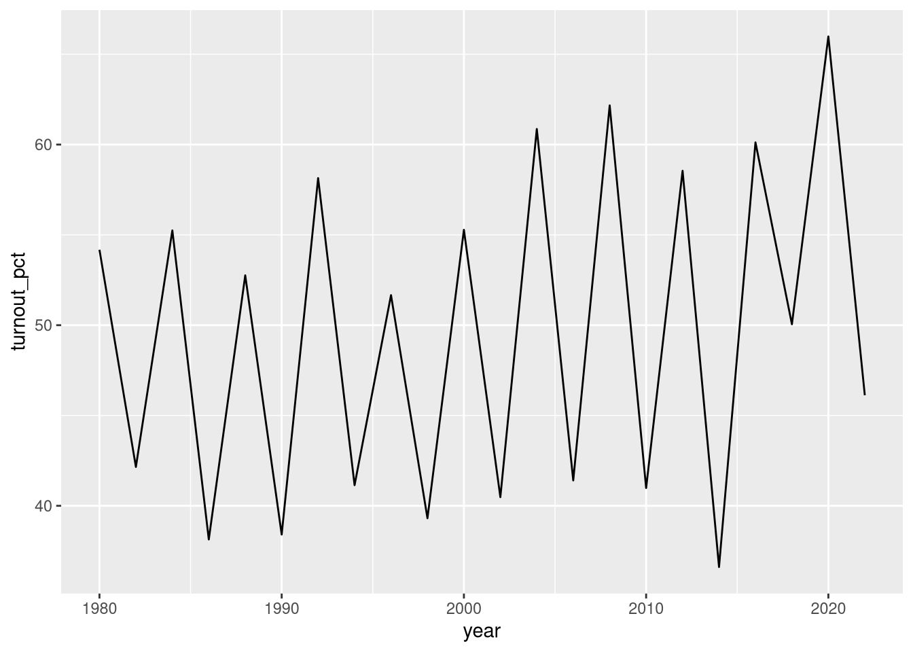

This first lecture is designed to take you from zero to the first step in data analysis — being able to load a dataset into R and look at it. The most important concepts and skills we’ll hit are the following:
Files on your computer live in directories. Your working directory lets R know where to look for files, as well as where to save any files you might create.
We’ll code in the context of Quarto files. These let us mix together plain text with R code. You can look at the results of the code in RStudio as you go along, as well as compiling everything into a single document.
Throughout the course we will rely heavily on the tidyverse package for loading, cleaning, manipulating, and plotting data. Today we will use the tidyverse functions for loading and looking at data.
The notes for this course are written using Quarto. For this lecture and future ones, I encourage you to download the Quarto source code from https://github.com/brentonk/qps1. You can even take your own notes in your copy of the relevant Quarto file (e.g., for today, intro_r.qmd).
1.1 Installing the software for this course
We won’t go through this part in class, as I’m assuming you’ve already followed all of these steps. Be sure to contact me (brenton.kenkel@gmail.com) or the TA (fall 2025: Mason Auten, mason.auten@vanderbilt.edu) ASAP if you have trouble installing any of these pieces of software — all of them are critical for you to be able to complete the work in PSCI 2300.
1.1.1 R
R is a programming language that originated in the 1990s and became popular among political scientists in the 2000s. While you could theoretically use R for a variety of programming tasks, in practice it is almost exclusively used for statistical analysis and data science, as it was developed specifically for these tasks.
The R that you installed in the last step just comes with very basic utilities for running R and writing R code. If you’re not used to programming, these programs will probably not be very helpful for you.
RStudio is a separate program that runs R in a more friendly and useful environment. It is called an IDE, which stands for “integrated development environment”, a fancy way of saying that it runs R and gives you a space to write R code while providing tools to check your work and make the process easier.
R comes with some built-in tools for data management and analysis, but R users typically use packages that extend R’s default capabilities.
You will end up installing and using a number of packages during PSCI 2300, but there are two that are absolutely essential to have from the start.
tidyverse, which provides a huge set of helpful functions for data management and visualization. We’ll talk about the tidyverse tools and use them virtually every day in this class.
tinytex, a background utility that is needed to compile your assignments to PDF. You’ll install this once, and — hopefully — never have to think about it again.
Brightspace, the terrible course management software that Vanderbilt makes us use, doesn’t allow annotations on HTML assignment submissions. By default, Quarto files can only be rendered as HTML, hence we need the extension to allow PDF output.
To install these packages, open up RStudio on your computer. Figure 1.1 shows what the program will probably look like when you first open it.
Figure 1.1: What RStudio looks like when you first open it.
I’m picky about my code setup. When you see me on RStudio in class, you might notice that I’m working with a different layout than the default illustrated in Figure 1.1. I prefer to have my source code on the left and any output — calculations that show up in the R console, plots that show up in the plotting window, or rendered documents that show up in the preview window — on the right.
When I’m coding in RStudio, my setup looks like this:
The console is the window on the left labeled with the version of R you’re running (4.5.1 in my case). You’ll see that the console contains a prompt, which looks like:
>
When you type a command into the prompt and hit enter, R will run your command and display the results. The simplest type of command is to just use R as a calculator.
> 3.14 * 7^2[1] 153.86
To install new packages, use the install.packages() command. For example, to install the tidyverse package, you’ll run install.packages("tidyverse"). After you hit enter, R will show you information about the download and installation process.
> install.packages("tidyverse")Installing package into ‘/home/brenton/R/x86_64-pc-linux-gnu-library/4.5’(as ‘lib’ is unspecified)trying URL 'https://cloud.r-project.org/src/contrib/tidyverse_2.0.0.tar.gz'[... omitting a bunch more output here ...]* DONE (tidyverse)
Even small typos lead to failure
You need to run R commands exactly as they’re written. For example, what if you forgot the quotation marks and ran install.packages(tidyverse)?
> install.packages(tidyverse)Error: object 'tidyverse' not found
When you run this, R thinks that you’re asking it to look for a variable named tidyverse that stores the names of the package or packages you want to install. When it sees that you didn’t actually create a variable named tidyverse, it stops with an error.
This seems stupid — shouldn’t it infer that you wanted it to install the package named tidyverse? Indeed, R is stupid in this way, doing no more or no less than you ask it to, and failing whenever you make any kind of minor typo or error. The problem is that a “smarter” program would also be a more unpredictable one, and we want our programming languages to operate predictably.
Once you’ve installed a package, you don’t need to install it again unless you upgrade the version of R on your computer. To use a package that you’ve installed, call it with the library() command:
library("tidyverse")
── Attaching core tidyverse packages ──────────────────────── tidyverse 2.0.0 ──
✔ dplyr 1.1.4 ✔ readr 2.1.5
✔ forcats 1.0.0 ✔ stringr 1.5.1
✔ ggplot2 3.5.2 ✔ tibble 3.2.1
✔ lubridate 1.9.4 ✔ tidyr 1.3.1
✔ purrr 1.0.4
── Conflicts ────────────────────────────────────────── tidyverse_conflicts() ──
✖ dplyr::filter() masks stats::filter()
✖ dplyr::lag() masks stats::lag()
ℹ Use the conflicted package (<http://conflicted.r-lib.org/>) to force all conflicts to become errors
1.1.4 tinytex package
The tinytex installation requires two steps. This is truly specific to tinytex — as far as I know, none of the other packages we use in this class will require this second step.
To install tinytex, run these two commands in the R console:
The first command installs the tinytex R package. The second command downloads supplemental files used for PDF rendering and installs them to your computer. After running these two commands, you should never need to directly interface with tinytex again — Quarto will handle that for you.
1.1.5 Quarto
If you wanted to code like a pure programmer, you would work in scripts that contain R code and nothing else. These would be plain text files with a .r or .R extension.
But we’re not trying to become pure programmers in PSCI 2300. The real goal is to learn how to analyze data to answer questions about politics. For that purpose, it makes more sense to work in Quarto files, which typically have a .qmd extension.
A Quarto file typically contains both regular language and code. RStudio makes it easy to check the code you’re writing as you go along, to make sure it’s doing what you expect and that there aren’t any errors. You will ultimately compile, or “render”, the Quarto file into a document much like this one. The document will not only display the code you wrote, but also run that code and show the output. This makes Quarto a great tool to communicate the results of data analyses.
One of the conveniences of contemporary computing is that you usually don’t have to think about the details of where or how files are stored on your computer. You can just open up File Explorer or Finder, and it’ll show you everything you recently accessed or downloaded. And if what you’re looking for isn’t there, you can run a search and it’ll come up quick enough.
R, like any programming language, is powerful — but that power comes at a cost. You have to be very explicit with R about everything, including where to look for files. R will do exactly what you ask, no more, no less.
By default, R looks for files in the working directory. You can run the getwd() command (as in: get the working directory) in the R console to see what your current working directory is.
getwd()
[1] "/home/brenton/Dropbox/courses/qps1/notes"
If you’re on Windows, the default working directory is probably C:/Users/username/Documents. On a Mac, it’s probably /Users/username.
You can use the setwd() command in the R console to change your working directory. Alternatively, it’s probably easier to use the RStudio file browser to set the working directory, especially if you’re not a middle-aged MS-DOS veteran who has their computer’s directory hierarchy memorized.
Figure 1.2: Setting the working directory in RStudio.
Sometimes you’ll see people use setwd() to set the working directory within their R scripts or Quarto files. Don’t do this. Everyone’s computer is different, with a different directory structure. So if someone else — say, the TA or professor who is grading your problem set — downloads your file and tries to run the code, it’ll likely stop with an error when setwd() looks for a directory that doesn’t exist.
For this class, I would recommend creating a psci2300 directory somewhere easy to access, then create new directories inside of there for each set of lecture notes and each problem set. What’s most important, though, is that you keep the files for this course somewhere that you can remember, and that you set R’s working directory accordingly.
tl;dr:
Put your files in a directory where you can find them.
setwd() to that directory when doing data analysis in R.
If R isn’t finding the files you need, use getwd() to see where it’s looking for them. Then either put the files there, or setwd() to wherever they are.
1.3 Writing documents in Quarto
We will do all of our work within Quarto files. A Quarto file is a plain text file: if you open it in a bare-bones editor like Notepad (Windows) or TextEdit (Mac), you will see exactly the same content that you see in RStudio, except without the pretty colors used for syntax highlighting.
There are three components to a Quarto file:
The header at the top, containing metadata about the document like the title and author. It also contains instructions for the Quarto engine on how to render it.
Text written in Markdown format. This contains the, like, words that you would use to say, um, stuff.
Code chunks containing R code. When you render the Quarto document, it runs these code chunks in R. The output is then displayed in the document, like how above in the “Working with working directories” section it showed the output of getwd() when I compiled these notes on my computer.
We will only cover the bare bones of writing files in Quarto. For truly comprehensive information, see the documentation on Quarto’s website.
1.3.1 The header
The very first thing in a Quarto file is a header. A typical header might look something like this:
---title:"Introduction to R"author:"Brenton Kenkel"date: 2025-08-26format:pdf:fontsize: 12pthighlight-style: tango---
The title line specifies the title of the document. Everything inside the quotation marks is considered the title; the quotation marks themselves are not treated as part of the title. If you needed to include quotation marks in your title for some reason, you would “escape” them with a backslash like this:
title:"Yeah, I \"Needed\" Quotation Marks in the Title"
The author block specifies the author. It works just like the title block.
The date block specifies the date. Programming languages like R typically best manage dates in YYYY-MM-DD format, so that’s how I write the date. But you can just write it however you want it to show up in the output document, being careful to use quotation marks if there are commas or colons or the like.
date:"The 21st day of August, Year of the Depend Adult Undergarment"
The format block specifies the default format that the document should be rendered as. The most common formats are pdf, which you’ll use for your problem sets in this class, and html. The fontsize and highlight-style options within the pdf block in the example header control the look of the PDF that’s rendered. There are tons more options documented on the Quarto website. But don’t worry too much about having to work through these — for the problem sets, I’ll distribute a template with a premade header that you just have to plug your name into.
1.3.2 Ordinary text in Markdown format
You write a Quarto document in plain text. There’s some special syntax you can use to mark up that text with formatting (bold, italics), to include headings and hyperlinks, place images, and so on. One of the best ways to learn the syntax is to just download the .qmd source for these lecture notes and compare to the output. And here’s a quick guide to the most useful pieces of syntax:
# Big heading## Medium heading### Small headingYou can make things *italic* or **bold**. You can even put things in `code font`.* this is* a bulleted* list<!--This is a comment!It won't show up in the rendered output!-->You can include [hyperlinks](https://vanderbilt.edu).1. this is2. a numbered3. listFinally, you can include images:
1.3.3 Code blocks
The special thing about Quarto is that you can include blocks of R code. (Or Python, if you’re into snakes.) When you render the document, the code you put into each block will be run in R, and the output will be included in the document.
As a quick example, we can have R do some basic arithmetic for us.
7*6
[1] 42
To create the above, all I entered in my Quarto source file was the following:
```{r}7*6```
The triple backticks tell Quarto: “Everything after this is code, until the next set of triple backticks.” The {r} then tells Quarto: “Not only is this code, but this is R code that you should run.”
If you don’t want to remember this goofy syntax yourself, you can run Code -> Insert Chunk from the RStudio menu. Or even better, for the efficiency aficionados, hit Ctrl-Alt-I (Windows) or Command-Option-I (Mac).
You usually won’t need to use anything other than the default code chunk. But sometimes you will want to customize. For example, as we saw when running library("tidyverse") at the end of Section 1.1.3, loading the tidyverse package spits out a bunch of annoying messages that I usually don’t want cluttering up my Quarto output. To keep these out, I can use the message: false option for the code block where I load tidyverse:
```{r}#| message: falselibrary("tidyverse")```
Or if I were creating a figure, I might use the fig-cap option to add a caption to it:
```{r}#| fig-cap: "Popularity of polar bears over time"df_polar_bears |>ggplot(aes(x = year, y = popularity)) +geom_line()```
See the Quarto documentation for the comprehensive list of chunk options. FYI, I have used Quarto and its predecessor R Markdown for a decade and have never used 90% of these, so don’t worry about trying to figure them all out.
1.3.4 Rendering
When you’re done writing your Quarto file and want to turn it into a PDF, hit the “Render” button in the RStudio interface. Assuming that there aren’t any errors in your R code chunks that prevent the document from compiling, you’ll see the PDF output in RStudio’s Preview window (or perhaps in an external browser or PDF viewer, depending on RStudio’s settings).
But you really shouldn’t wait until you’re all done to render. As you write, you should regularly take a look at the rendered output to make sure there are no errors and that it looks how you expect. When I’m writing in Quarto (including these notes), at a minimum I re-render and check the output every time I finish writing a paragraph of text or a full code block. Even more aggressively, you can check the “Render on Save” box to automatically render the document every time you save.
1.4 Pulling data into R
We are finally ready for the fun part — data!
Once you’ve opened RStudio, make sure you’ve loaded the tidyverse package if you haven’t done so already.
library("tidyverse") # tells R to put the tidyverse functions into its memory
We will use the tidyverse package basically every day in this class. R has built-in functions for loading and manipulating data, but these got old and creaky over time. The tidyverse provides a more modern and full-featured set of functions to load and work with data. You should probably just put library("tidyverse") in an R code chunk at the start of all your Quarto documents so that you don’t need to worry about which functions come from the tidyverse and which ones are built into R.
Comments in R code
The hashtag character # begins a comment in R. Once you put # in a line of R code, the R console will ignore everything after it until the end of the line. So both of these lines of code are the same, as far as R is concerned:
3+8
[1] 11
3+8# + 1000 * 92 - infinity
[1] 11
Comments are useful to leave notes to yourself, or to anyone else who might read your code, to explain what you’re doing or why you did it. They’re a bit less important in Quarto documents than in raw R scripts, since you can include full-text explanations in Quarto, but you’ll still see me use comments pretty frequently within code chunks too.
CSV stands for comma-separated values. It is the most common way that political scientists distribute datasets, and all of the datasets I give you in this course will be in CSV format. The first row contains the names of the variables, each separated by a comma. Each subsequent row contains an observation, with the value of each variable again separated by commas. If you open up turnout.csv in a plain text editor (like Notepad on Windows or TextEdit on a Mac), the first few lines look like this:
This data comes from the Election Lab at the University of Florida. They track important statistics about turnout in federal elections: how many people were old enough to vote, how many of those were actually eligible to vote (i.e., excluding noncitizens and felons), and how many ballots were actually cast. Here’s a guide to the variables that are included here:
See Appendix B for more detail on all data files used in these notes.
Variable name
Definition
year
Election year
votes_counted
Number of votes cast that election year (in millions)
voting_age_pop
Voting-age population (in millions)
voting_eligible_pop
Voting-eligible population (in millions)
ineligible_felons
Citizens ineligible to vote due to felonies (in millions)
ineligible_noncitizens
Residents ineligible to vote because not citizens (in millions)
eligible_overseas
Number of voting-eligible citizens living outside the US (in millions)
We need to load this into R as a data frame, which is kind of like the equivalent of a spreadsheet within R. To that end, we’ll plug the URL into the read_csv() function. (Make sure you type the URL exactly right — it’s probably easiest to just copy-paste the following line.)
Let me break down that line for you, because there’s a lot going on here:
df_turnout is a variable name, which we will use to store and retrieve the data. The choice of variable name is totally up to you — but you’ll find yourself less confused and making fewer mistakes if you give your variables descriptive, memorable names. I usually name data frames df_topic, where df stands for “data frame” (you’ll create plenty of other variables that aren’t data frames) and where topic is whatever the data is about.
<- is the assignment operator. When we write varname <- value, what we are telling R is: “Calculate the value on the right-hand side. Then stuff the result of that calculation into varname, so that when I type varname into the R console later, it’s treated as the value of the calculation.”
read_csv("https://bkenkel.com/qps1/data/turnout.csv") tells R to visit the URL, take the contents of the file there, and put the data from it into a data frame. Notice that the URL goes into quotation marks.
What if we were to run read_csv(...) alone, without assigning to a variable name? R would read the data, put it in a data frame, print the first few rows of the data frame, and then promptly forget that the data was ever there. Since the goal is to analyze the data, we want to store it as a variable to perform further calculations.
read_csv versus read.csv
In this class, I’ll always read data files using the read_csv() function. Sometimes you’ll see people using read.csv() instead, with a dot instead of an underscore. For the most part, read.csv() works the same way as read_csv(). However, I prefer read_csv() because it works faster on large datasets and has better default options.
Reading data from a file on your computer
Sometimes you can’t read data directly from a URL. Maybe you’re about to get on an airplane and won’t have wi-fi, or maybe someone emailed you a file you want to analyze. Either way, once you’ve downloaded the file to your computer, how do you get it into R?
In this situation, you need to be especially mindful of your working directory (see Section 1.2). You want R’s working directory to match the location of the downloaded file, which means doing one of two things:
Before downloading the file, run getwd() in R to see where its working directory is. When you download the file, make sure to save it to that directory.
getwd()
[1] "/home/brenton/Dropbox/courses/qps1/notes"
For example, I would need to save the file to (deep breath) the notes directory inside the qps1 directory inside the courses directory in my Dropbox.
Alternatively, after downloading the file, change the working directory in R to be wherever you put it. You can do this by giving the full directory path to setwd(), but it’s probably easier to use the file navigator in the RStudio interface, as illustrated in Figure 1.2.
After following either of these methods, you can use the dir() command to look at the list of files that R “sees” in the current working directory.
Finally, once you’ve confirmed that the data file you want to analyze shows up here, you can load it into R by plugging the filename into read_csv(). As always, the filename will need go inside quotation marks. For example, if the file is called pre_election_polls.csv, you would run:
df_polls <-read_csv("pre_election_polls.csv")
1.4.2 Looking at the data
If in the bottom of your heart you long for the comfort of Microsoft Excel, you can get a spreadsheet-type view of the data using the View() command in RStudio:
View(df_turnout)
Or you can see info in the R console by typing the variable name into the prompt and hitting enter:
“tibble” is just tidyverse’s cutesy name for data frames. I will use “tibble” and “data frame” interchangeably, though I’ll usually say “data frame” because “tibble” sounds more like a name for a stray cat. The <dbl> under each variable name indicates the type of variable. <dbl> just means the variable is a number (it comes from “double precision”, which is a particular way numbers are stored in computers). The other most common categorization you’ll see is <chr>, for variables that are “characters” rather than numbers.
Unless your data frame has unusually few columns, this view will wind up with some of them being cut off. To see the first few entries of every single column, use glimpse():
As you can see in the preceding code blocks, when you select a column using brackets (whether by number or by name), R gives you a data frame with a single column. When you use the dollar sign, it gives you a vector — which you can think of as just a list of numbers, without the row-column structure of a data frame.
If you’re planning to do other calculations like taking a sum or average, it’s usually more convenient to work with vectors than with single-column data frames. Hence my preference for df_turnout$voting_eligible_pop over df_turnout[, "voting_eligible_pop"].
1.4.3 Simple analysis
What has been the average voter turnout in federal elections since 1986? What about the highest and lowest? How has it varied over time?
To answer these questions, first we need to actually calculate turnout as a percentage: \[\text{turnout \%} = \frac{\text{votes cast}}{\text{eligible voters}} \times 100.\] Let’s implement this formula in R, storing the result in a variable called turnout_pct.
The first line exploits a very convenient feature of R. If we have two vectors x and y with the same number of entries, then x / y will divide the first element of x by the first of y, the second element of x with the second of y, and so on. The same logic applies to x + y, x - y, x * y, x^y (x to the y’th power), and many more basic mathematical operations.
The second line shows how we can modify a variable “in place”. I often break up complex calculations into multiple lines this way, just to make the code as easy to follow and read as possible.
We can now calculate the lowest, highest, average, and median turnout.
min(turnout_pct)
[1] 36.61048
max(turnout_pct)
[1] 65.98637
mean(turnout_pct)
[1] 49.5346
median(turnout_pct)
[1] 50.85756
The summary() command does all this at once, and more:
summary(turnout_pct)
Min. 1st Qu. Median Mean 3rd Qu. Max.
36.61 41.02 50.86 49.53 57.43 65.99
The first quartile is the 25th percentile: turnout is lower than 41% in a quarter of elections, and greater than 41% in the other three quarters of the elections. The third quartile is the mirror image of this: turnout is lower than 57% in three-quarters of elections, and greater than 57% in the other quarter.
1.4.4 Simple data visualization
We’ll use ggplot() for data visualization throughout this course. The syntax for it is kind of weird, so don’t worry if it’s not all clear at first. You’ll get used to it over time, and we’ll talk about it in much more detail in the coming weeks.
The first thing we need to do is put our turnout percentage calculation into our data frame as a column.
df_turnout$turnout_pct <- turnout_pctglimpse(df_turnout) # now includes an 8th column containing turnout
Now let’s make a very rough graph of how turnout has changed over time. Quarto will helpfully display the graph in the output once we render it!
ggplot(df_turnout, aes(x = year, y = turnout_pct)) +geom_line()

What stands out to me about this graph is the cyclical pattern, with turnout typically being 10–15 percentage points lower in midterm years than in presidential election years.
‘Percent’ versus ‘percentage point’
Voter turnout was about 65% in 2020 and about 50% in 2018. So which of the following sentences is true, and which is false?
“Turnout in 2018 was 15 percent lower than turnout in 2020.”
“Turnout in 2018 was 15 percentage points lower than turnout in 2020.”
Here’s my heuristic for deciding whether I’m calculating a “percent” or a “percentage point” change:
If I’m using division to make the comparison, then I’m calculating a percent. For example, because \[\frac{50}{65} \approx 0.77 = 77\%,\] I would say that turnout in 2018 was about 23 percent lower than in 2020.
If I’m using subtraction to make the comparison, then I’m calculating a percentage point. For example, because \(65 - 50 = 15\), I would say that turnout in 2018 was about 15 percentage points lower than in 2020.
If you’re uncertain whether to report a percent difference or a percentage point difference, default to using the percentage point difference — it’s less confusing, especially to audiences that might not be finely attuned to the distinction. For example, imagine I said that jaywalking on 21st Ave raises your chance of being hit by a car by 50 percent. An inattentive or uninformed listener might incorrectly take that to mean that at least half of jaywalkers are getting hit. But if it’s actually just 2 out of every 10,000 non-jaywalkers who are getting hit, my statement would only mean that the rate is 3 out of 10,000 for jaywalkers.
{kind=link}
{kind=link}
{kind=link}
{kind=link}